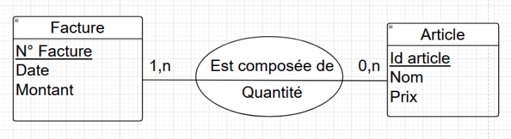
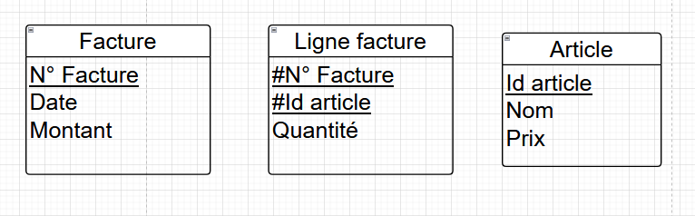

Modèle Conceptuel de Données
Le MCD est un schéma conceptuel qui permet de représenter les données d'un système d'information.
Il est composé d'entités, d'attributs et de relations.
Les entités sont des objets du monde réel qui sont représentés dans la base de données.
Les attributs sont les caractéristiques des entités.
Les relations sont les liens entre les entités.
Le MCD est une étape importante dans la conception d'une base de données.
Il permet de définir les tables et les relations entre les tables.
Il est utilisé pour communiquer avec les utilisateurs et les développeurs.
Il est utilisé pour valider le modèle de données.
Cardinalité, qu'est-ce que c'est ?
La cardinalité est le nombre d'occurrences mnimales et maximales sous la forme d'un couple (min, max) d'une entité qui peuvent être associées à une occurrence d'une autre entité.
exemple, cardinalité de la facture : 1,n, cardinalité de l'article : 0,n
une association est toujours dessinée sous forme ovale.
la quantité est ce qu'on appelle une quantité portée.
Un système c'est un ensemble d'objet. On a modéliser ce système, le représenter sous forme de graphique une système d'information, qu'on stocker dans une base de données.
Après le MCD, on réaliser le MLD.
MLD : Model Logique Donnée
Le MLD est un schéma logique qui permet de représenter les données d'un système d'information.
Une entité va devenir une table, identifiant devient une clé primaire, une association de type (on regarde le nombre maximal de cardinalité) on appelle ça une association n, n / many to many
Une association n,n devient aussi une table.
Toutes les associations dans le MLD deviennent des tables.
Comme c'est une association, on va aller récupérer les deux cmés primaires (article, facture).
Comme c'est une clé etrangère à la ltable centrale du shéma, on l'appelle un clé étrangère, ForeignKey (FK).
Dans l'association, ces deux clés étrangères vont permettre d'identifier une ligne facture, ces deux lignes on les appelle ça dans la table du milieu un clé primaire composée.
Base de données
MySQL, Oracle, etc. sont tous des SGBD, Systèmes de Gestion de Base de Données relationnelles. Les SGBD sont des logiciels qui permettent de créer, gérer et manipuler des bases de données.
Une base de données est un ensemble de tables qui contiennent des données. Chaque table est composée de lignes et de colonnes. Les lignes représentent les enregistrements et les colonnes représentent les attributs.
Les tables sont reliées entre elles par des clés étrangères. Les clés étrangères permettent de créer des relations entre les tables.
Les requêtes SQL (Structured Query Language) permettent de manipuler les données dans une base de données. Les requêtes SQL permettent de créer, lire, mettre à jour et supprimer des données dans une base de données.